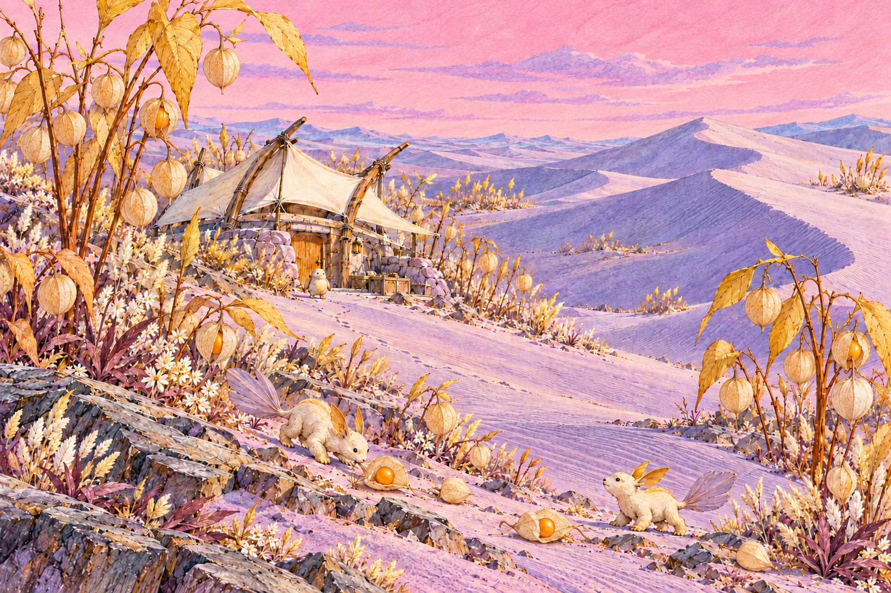
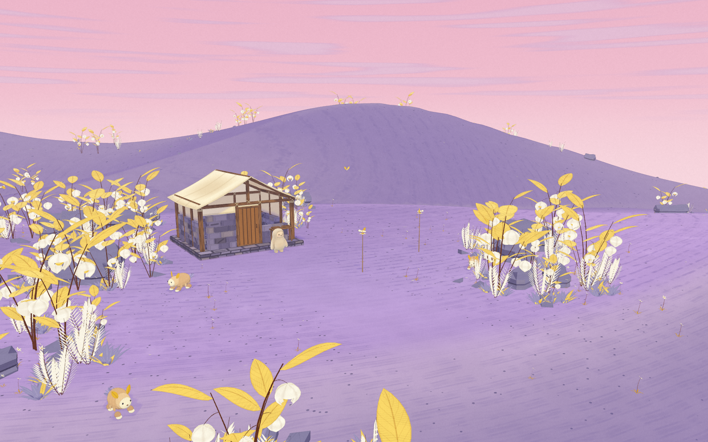

Paper Orchard
Violet sand, golden Physalis, feathered ivory foliage and dusty pink daylight.
Open the living planet ·
Validation and remaining gaps

Concept target
Approved Physalis fruit and pink-sky direction. This is concept art.

Actual app · Orchard
Seed 412 · high quality · time 12 · render scale 1. Interactive 3D interpretation; visual sign-off is pending.
Orchard · actual app checkpoint
Compare the large dune shapes, open route and grouped planting first, then inspect slate, thin calyces, canvas, ground contacts and animal anatomy. The earlier pass is a saved intermediate state, not an untouched baseline. Broader shapes and simpler drawing detail remain visible differences from the concept.